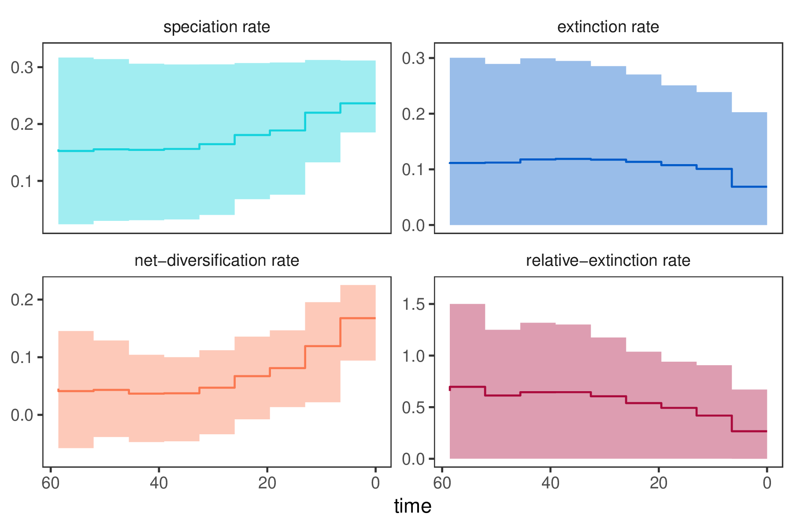

Overview
This tutorial describes how to specify an episodic branching-process model in RevBayes;
a birth-death process where diversification rates vary episodically through time
modeled as piecewise-constant rates (Stadler 2011; Höhna 2015).
The probabilistic graphical model is given once at the beginning of this tutorial.
Your goal is to estimate speciation and extinction rates through-time using
Markov chain Monte Carlo (MCMC).
You should read first the Introduction to Diversification Rate Estimation which explains the theory and gives some general overview of diversification rate estimation and Simple Diversification Rate Estimation which goes through a very simple pure birth and birth-death model for estimating diversification rates.
Episodic Diversification Rate Models
The basic idea behind the model is that speciation and extinction rates are constant within time intervals but can be different between time intervals. Thus, we will divide time into equally sized intervals. An overview of the underlying theory of the specific model and implementation is given in (Höhna 2015).

shows an example of a constant rate birth-death process and an episodic birth-death process.
We assume that the log-transformed rates are drawn from a normal distribution. Furthermore, we will assume that rates are autocorrelated, that is, rates in the current time interval will be centered around the rates in the previous time interval. Thus, we model (log-transformed) diversification rates by a Brownian motion. The assumption of autocorrelated rates does not only makes sense biologically but also improves our ability to estimate parameters.

Rev code. On the left we see the graphical model
describing the correlated (Brownian motion) model for rate-variation through time.
On the right we show the corresponding Rev commands to instantiate this model.
This figure gives a complete overview of the model that we use here in this analysis.We show a graphical model of the episodic birth-death process with autocorrelated rates in . This graphical model shows you which variables are included in the model, and the dependency between the variables. Thus, it makes the structure and assumption of the model clear and visible instead of a black-box (Höhna et al. 2014). For example, you see how the speciation and extinction rates in each time interval depend on the rates of the previous interval, and that we use a hyperprior for the standard deviation of rates between time intervals.
Estimating Episodic Diversification Rates
Read the tree
Begin by reading in the ``observed’’ tree.
T <- readTrees("data/primates_tree.nex")[1]
From this tree, we get some helpful variables, such as the taxon information which we need to instantiate the birth-death process.
taxa <- T.taxa()
Additionally, we initialize an iterator variable for our vector of moves and monitors.
mvi = 1
mni = 1
Finally, we create a helper variable that specifies the number of intervals.
NUM_INTERVALS = 10
Using this variable we can easily change our script to break-up time into many (\EG~\cl{NUM_INTERVALS = 100}) or few (\EG~\cl{NUM_INTERVALS = 4}) intervals.
Specifying the model
Priors on amount of rate variation
We start by specifying prior distributions on the rates.
Each interval-specific speciation- and extinction-rate will be drawn from a normal distribution.
Thus, we need a parameter for the standard deviation of those normal distributions.
We fix this parameter to 0.587405 divided by NUM_INTERVALS so that we expect the
rates to vary by one order of magnitude, i.e., we give 95% prior probability to a variance
of one order of magnitude.
(You may want to experiment with this to add hyperprior if you are interested.)
SD = 0.587405 / NUM_INTERVALS
speciation_sd <- SD
extinction_sd <- SD
Specifying episodic rates
As we mentioned before, we will apply normal distributions as priors for each log-transformed rate. We begin with the rate at the present which is our initial rate parameter. The rates at the present will be specified slightly differently because they are not correlated to any previous rates. This is because we are actually modeling rate-changes backwards in time and there is no previous rate for the rate at the present. Modeling rates backwards in time makes it easier for us if we had some prior information about some event affected diversification sometime before the present, e.g., 25 million years ago.
We use a uniform distribution between -10 and 10 because of our lack of prior knowledge on the diversification rate. This actually means that we allow speciation and extinction rates between $e^{-10}$ and $e^10$, so we should clearly cover the true values. (Note that for diversification rate estimates, $e^{-10}$ is virtually 0 since the rate is so slow).
log_speciation[1] ~ dnUniform(-10.0,10.0)
log_speciation[1] ~ dnUniform(-10.0,10.0)
Notice that we store the diversification rate variables in vectors. Storing the rate parameters in vectors will be useful and important later when we pass the rates into the birth-death process.
We apply simple sliding window moves for the rates. Normally we would use scaling moves but in this case we work on the log-transformed parameters and thus sliding moves perform better. (If you are keen you can test the differences.)
moves[mvi++] = mvSlide(log_speciation[1], weight=2)
moves[mvi++] = mvSlide(log_extinction[1], weight=2)
Now we transform the diversification rate parameters into actual rates using an exponential parameter transformation.
speciation[1] := exp( log_speciation[1] )
extinction[1] := exp( log_extinction[1] )
Next, we specify the speciation and extinction rates for each time interval (i.e., epoch).
This can be done efficiently using a for-loop.
We will use a specific index variable so that we can more easily refer to the rate at the previous interval.
Remember that we want to model the rates as a Brownian motion, which we achieve by specifying a normal distribution as the prior distribution on the rates centered around the previous rate (\IE the mean of the normal distribution is equal to the previous rate).
for (i in 1:NUM_INTERVALS) {
index = i+1
log_speciation[index] ~ dnNormal( mean=log_speciation[i], sd=speciation_sd )
log_extinction[index] ~ dnNormal( mean=log_extinction[i], sd=extinction_sd )
moves[mvi++] = mvSlide(log_speciation[index], weight=2)
moves[mvi++] = mvSlide(log_extinction[index], weight=2)
speciation[index] := exp( log_speciation[index] )
extinction[index] := exp( log_extinction[index] )
}
Finally, we apply moves that slide all values in the rate vectors,
i.e., all speciation or extinction rates.
We will use an mvVectorSlide move.
moves[mvi++] = mvVectorSlide(log_speciation, weight=10)
moves[mvi++] = mvVectorSlide(log_extinction, weight=10)
Additionally, we apply a mvShrinkExpand move which changes the spread of several variables
around their mean.
moves[mvi++] = mvShrinkExpand( log_speciation, weight=10 )
moves[mvi++] = mvShrinkExpand( log_extinction, weight=10 )
Both moves considerably improve the efficiency of our MCMC analysis.
Setting up the time intervals
In RevBayes you actually have the possibility to specify unequal time intervals
or even different intervals for the speciation and extinction rate.
This is achieved by providing a vector of times when each interval ends.
Here we simply break-up the time in equal-length intervals.
interval_times <- T.rootAge() * (1:NUM_INTERVALS) / NUM_INTERVALS
This vector of times will be used for both the speciation and extinction rates. Also, remember that the times of the intervals represent ages going backwards in time.
Incomplete Taxon Sampling
We know that we have sampled 233 out of 367 living primate species. To account for this we can set the sampling parameter as a constant node with a value of 233/367. For simplicity, and since almost all species have been sampled, we assume uniform taxon sampling (Höhna et al. 2011; Höhna 2014),
rho <- T.ntips()/367
Root age
The birth-death process requires a parameter for the root age. In this exercise we use a fixed tree and thus we know the age of the tree. Hence, we can get the value for the root from the Magnuson-Ford and Otto (2012) tree.
root_time <- T.rootAge()
The time tree
Now we have all of the parameters we need to specify the full episodic birth-death model. We initialize the stochastic node representing the time tree.
timetree ~ dnEpisodicBirthDeath(rootAge=T.rootAge(), lambdaRates=speciation, lambdaTimes=interval_times, muRates=extinction, muTimes=interval_times, rho=rho, samplingStrategy="uniform", condition="survival", taxa=taxa)
You may notice that we explicitly specify that we want to condition on survival. It is possible to change this condition to the time of the process or the number of sampled taxa too.
Then we attach data to the timetree variable.
timetree.clamp(T)
Finally, we create a workspace object of our whole model using the model() function.
mymodel = model(speciation)
The model() function traversed all of the connections and found all of the nodes we specified.
Running an MCMC analysis
Specifying Monitors
For our MCMC analysis, we need to set up a vector of monitors to record the states of our Markov chain.
First, we will initialize the model monitor using the mnModel function.
This creates a new monitor variable that will output the states for all model parameters
when passed into a MCMC function.
monitors[mni++] = mnModel(filename="output/primates_EBD.log",printgen=10, separator = TAB)
Additionally, we create four separate file monitors, one for each vector of speciation and extinction rates and for each speciation and extinction rate epoch (\IE the times when the interval ends). We want to have the speciation and extinction rates stored separately so that we can plot them nicely afterwards.
monitors[mni++] = mnFile(filename="output/primates_EBD_speciation_rates.log",printgen=10, separator = TAB, speciation)
monitors[mni++] = mnFile(filename="output/primates_EBD_speciation_times.log",printgen=10, separator = TAB, interval_times)
monitors[mni++] = mnFile(filename="output/primates_EBD_extinction_rates.log",printgen=10, separator = TAB, extinction)
monitors[mni++] = mnFile(filename="output/primates_EBD_extinction_times.log",printgen=10, separator = TAB, interval_times)
Finally, we create a screen monitor that will report the states of specified variables
to the screen with mnScreen:
monitors[mni++] = mnScreen(printgen=1000, extinction_sd, speciation_sd)
Initializing and Running the MCMC Simulation
With a fully specified model, a set of monitors, and a set of moves,
we can now set up the MCMC algorithm that will sample parameter values in proportion
to their posterior probability.
The mcmc() function will create our MCMC object:
mymcmc = mcmc(mymodel, monitors, moves, nruns=2, combine="mixed")
Now, run the MCMC:
mymcmc.run(generations=50000, tuningInterval=200)
When the analysis is complete, you will have the monitored files in your output directory.
You can then visualize the rates through time using R using our package RevGadgets.
If you don’t have the R-package RevGadgets installed, or if you have trouble with the package, then please read the separate tutorial about the package.
Just start R in the main directory for this analysis and then type the following commands:
library(RevGadgets)
tree <- read.nexus("data/primates_tree.nex")
rev_out <- rev.process.div.rates(speciation_times_file = "output/primates_EBD_speciation_times.log", speciation_rates_file = "output/primates_EBD_speciation_rates.log", extinction_times_file = "output/primates_EBD_extinction_times.log", extinction_rates_file = "output/primates_EBD_extinction_rates.log", tree, burnin=0.25,numIntervals=100)
pdf("EBD.pdf")
par(mfrow=c(2,2))
rev.plot.output(rev_out,use.geoscale=FALSE)
dev.off()
(Note, you may want to add a nice geological timescale to the plot by setting use.geoscale=TRUE but then you can only plot one figure per page.)
⇨ The Rev file for performing this analysis: mcmc_EBD.Rev

Exercise 1
- Run an MCMC simulation to estimate the posterior distribution of the speciation rate and extinction rate.
- Visualize the rate through time using
Rand upload the file. - Do you see evidence for rate decreases or increases? What is the general trend?
- Is there evidence for rate variation? Look at the estimates of
speciation_sdandextinction_sd: Is there information in the data to change the estimates from the prior? - Run the analysis using a different number of intervals, e.g., 5 or 50. How do the rates change?
Exercise 2
- In our results we see that the extinction rate is fairly constant. Modify the model by using a constant-rate for the extinction rate parameter but still let the speciation rate vary through time.
- Remove all previous occurrences of the extinction rates (i.e., priors, parameters and moves).
- Specify a lognormal prior distribution on the constant extinction rate (
extinction $\sim$ dnLognormal(-5,sd=2*0.587405)) - Add a move for the new extinction rate parameter
moves[mvi++] = mvScale(extinction,weight=5.0). - Remove the argument
muTimes=interval_timesfrom the birth-death process.
- How does this influence your estimated rates?
- Höhna S. 2015. The time-dependent reconstructed evolutionary process with a key-role for mass-extinction events. Journal of Theoretical Biology. 380:321–331. http://dx.doi.org/10.1016/j.jtbi.2015.06.005
- Höhna S. 2014. Likelihood Inference of Non-Constant Diversification Rates with Incomplete Taxon Sampling. PLoS One. 9:e84184. 10.1371/journal.pone.0084184
- Höhna S., Heath T.A., Boussau B., Landis M.J., Ronquist F., Huelsenbeck J.P. 2014. Probabilistic Graphical Model Representation in Phylogenetics. Systematic Biology. 63:753–771. 10.1093/sysbio/syu039
- Höhna S., Stadler T., Ronquist F., Britton T. 2011. Inferring speciation and extinction rates under different species sampling schemes. Molecular Biology and Evolution. 28:2577–2589.
- Magnuson-Ford K., Otto S.P. 2012. Linking the Investigations of Character Evolution and Species Diversification. The American Naturalist. 180:225–245. 10.1086/666649
- Stadler T. 2011. Mammalian phylogeny reveals recent diversification rate shifts. Proceedings of the National Academy of Sciences. 108:6187–6192. 10.1073/pnas.1016876108